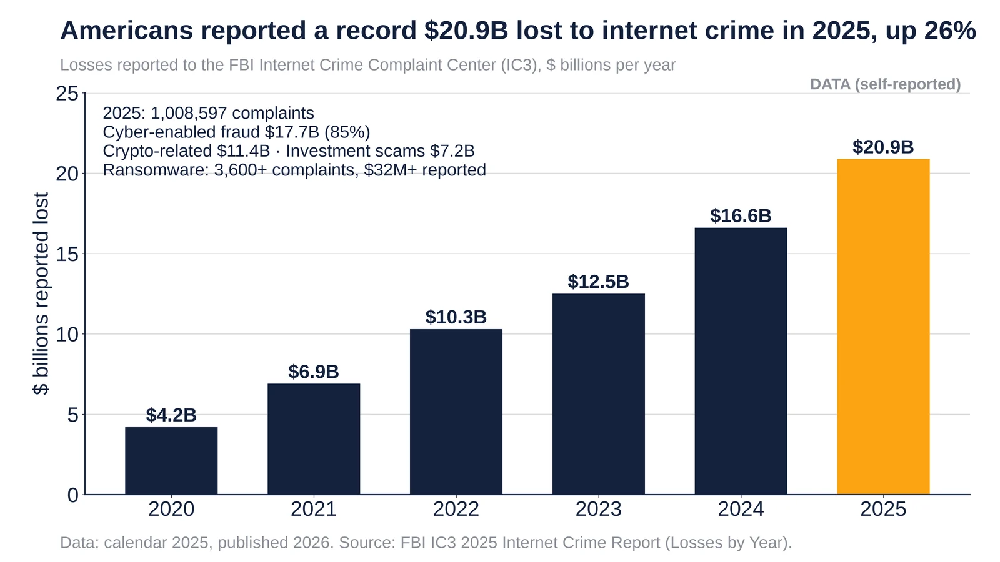
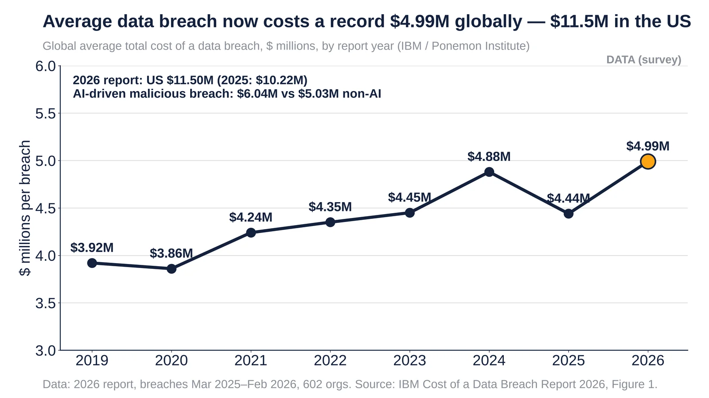
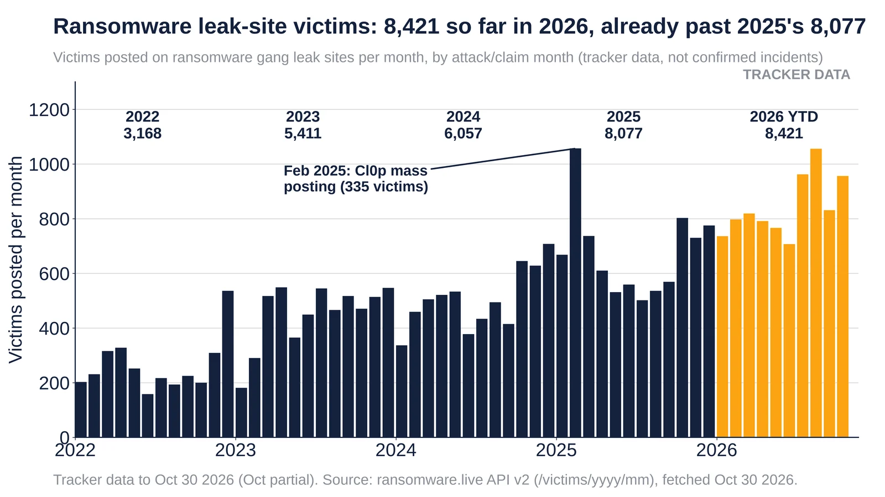

Q3. Ransomware & Costs
Weekly Focus graphs, started Oct 25, 2026: new charts are added each week from primary or clearly named secondary data. Each caption names its sources and its caveats.

Reported IC3 losses rose from $4.2B (2020) to $20.9B (2025) on 1.0M complaints. Source: FBI IC3 2025 report.
- 2025: $20.877B lost on 1,008,597 complaints, up 26% from $16.6B in 2024.
- Cyber-enabled fraud made up $17.7B (85%) of losses; crypto-related losses were $11.4B and investment scams $7.2B.
- Ransomware reported to IC3 was only 3,600+ complaints and $32M+, because victims mostly don't report business-loss costs.
Sources: FBI IC3 2025 Internet Crime Report (PDF) FBI Internet Crime Complaint Center

Global average breach cost a record $4.99M in 2026 (+12%); US $11.5M. Source: IBM Cost of a Data Breach 2026.
- The 2026 report covers 602 organizations breached between Mar 2025 and Feb 2026. The global average was $4.99M, up 12% after a dip to $4.44M in 2025.
- The US average was $11.50M (2025: $10.22M), a record and more than double the global figure.
- 39% of breached organizations were hit by ransomware, up from 24% in 2023.
Sources: IBM Cost of a Data Breach report IBM Cost of a Data Breach Report 2026 (PDF)

Victims posted on ransomware leak sites per month, through Oct 30 2026. Tracker data from ransomware.live, not confirmed incidents.
- Yearly totals: 3,168 (2022), 5,411 (2023), 6,057 (2024), 8,077 (2025) and 8,421 in 2026 through Oct 30.
- Aug 2026 was the record month with 1,056 victims, led by Qilin (159) and The Gentlemen (116).
- Feb 2025 shows a spike of 1,057, including 335 from Cl0p's mass posting.
Sources: ransomware.live tracker ransomware.live API, victims Oct 2026